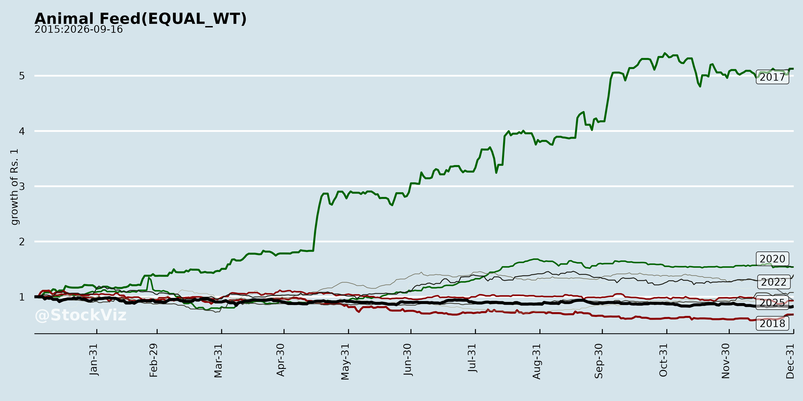
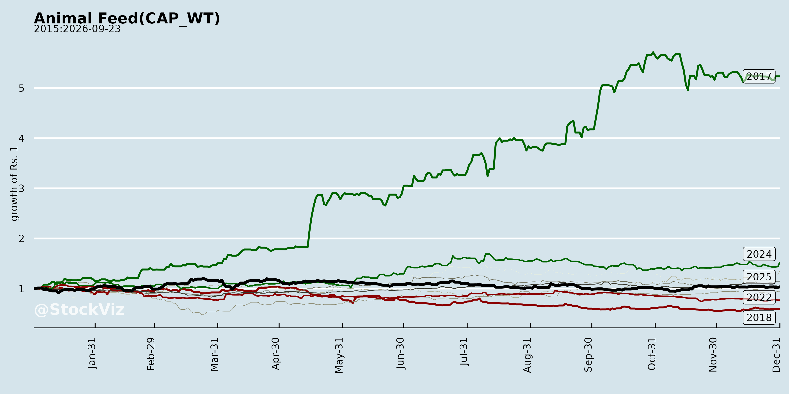
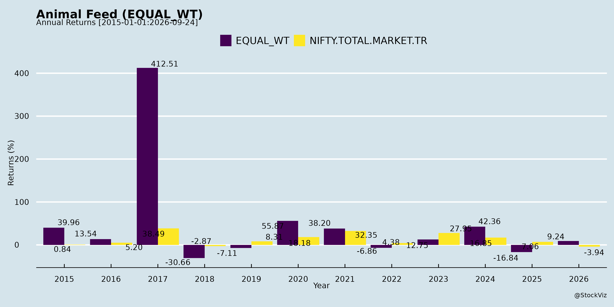
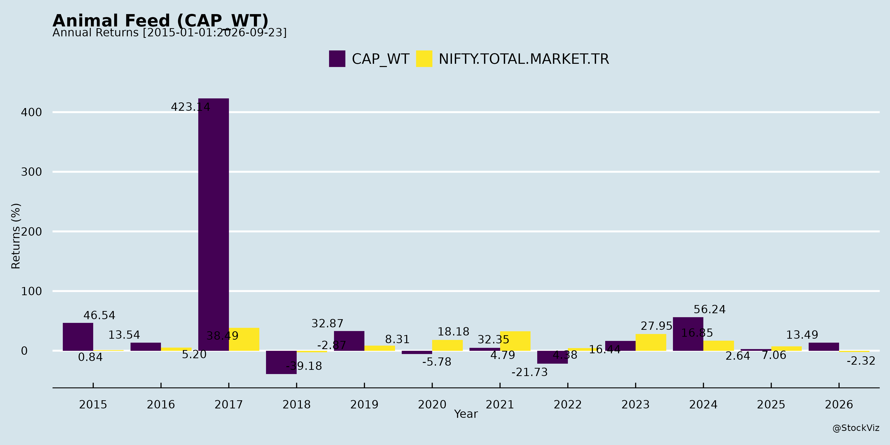
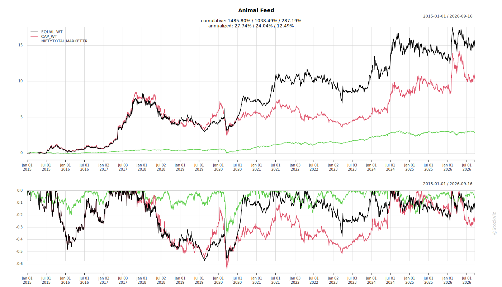
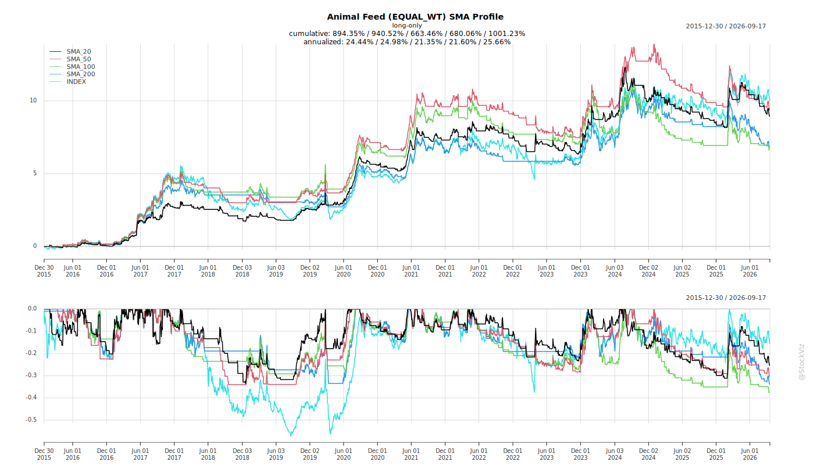
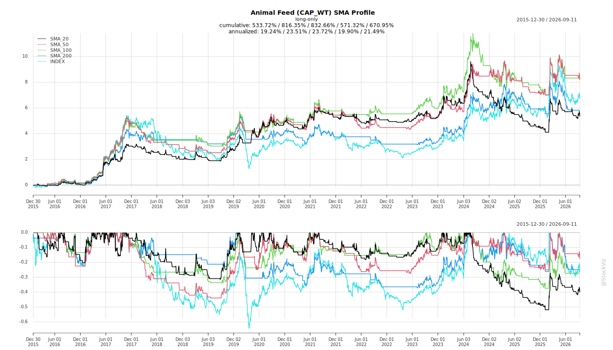
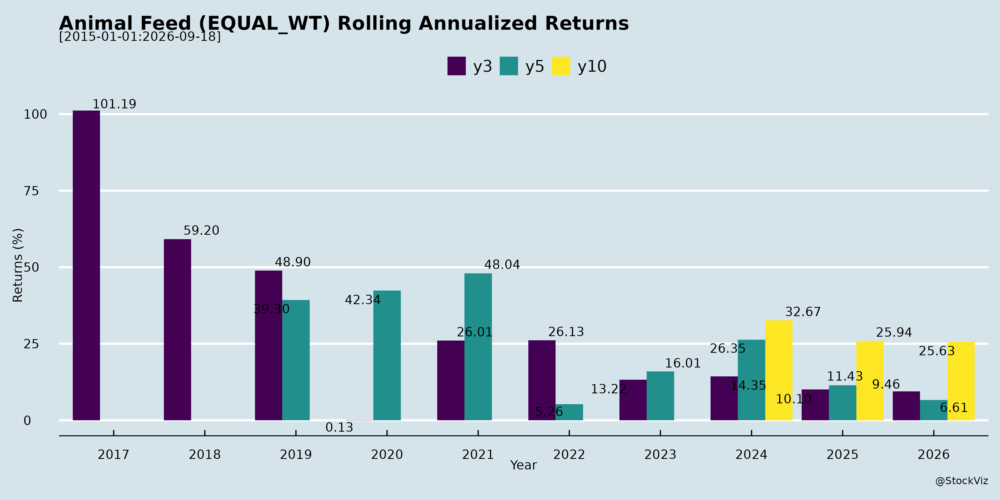
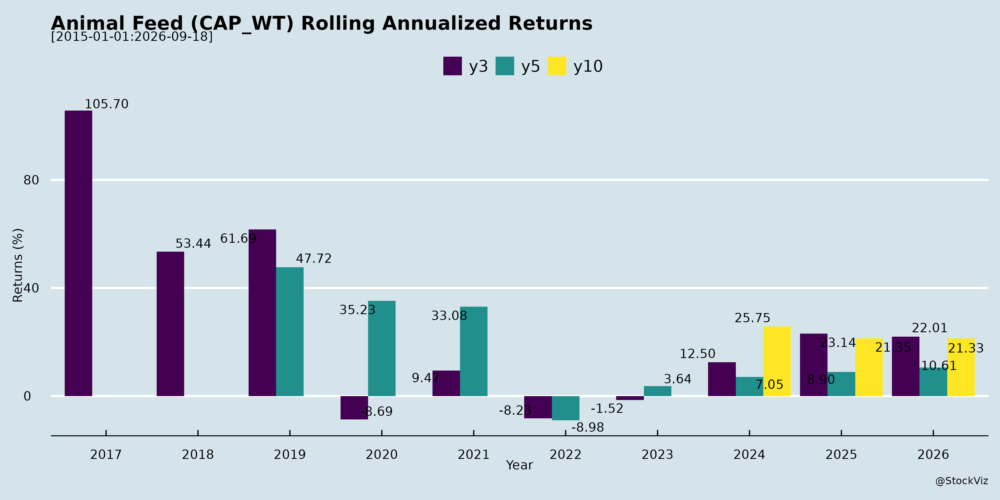

Annual Returns




Cumulative Returns and Drawdowns

SMA Scenarios


Current Distance from SMA
Rolling Returns


EBIT (% of Industry Total)
Revenue (% of Industry Total)
AI Summaries
Analyst
asof: 2025-11-27
Indian Animal Feed Sector Analysis
Based on Q2 FY26 Earnings Transcripts from Avanti Feeds (shrimp/aquafeed focus) and Godrej Agrovet (cattle feed dominant), with limited insights from Narmada Agrobase.
Headwinds
- Raw Material Price Volatility & Escalation: Key inputs like fish meal (up to ₹125-130/kg from ₹97/kg QoQ), soya bean meal (₹46-47/kg from ₹42/kg), and wheat flour (₹32.5-33/kg) rose sharply due to lower Peru/Chile catches, excess rains reducing soya output (~10%), MSP hikes, and export permissions for wheat. This pressured margins (Avanti expects feed EBIT margins to revert to 9-10% from H1 highs; Godrej notes softening realizations offsetting volumes).
- Weather & Seasonality: Excess/unseasonal rains narrowed spraying windows, reduced acreages (e.g., chilli), and disrupted sowing/harvesting, indirectly hitting feed demand via aquaculture/livestock health. Sales peak in Q1, tapering in H2.
- Pass-Through Limitations: Limited ability to raise feed prices amid competition, leading to margin compression despite volume gains.
Tailwinds
- Strong Volume Growth: Shrimp feed sales up 9% YoY H1 (320k MT vs. 293k MT); Godrej cattle feed +18% YoY (mid-teens overall Animal Feed), driven by operational efficiencies, geographic expansion, and market share gains.
- Margin Resilience: Godrej’s underlying EBIT/tonne stable at ₹1,900-2,000 (despite reported dip from bill discounting); Avanti PBT +24% YoY in Q2 due to higher volumes, lower raw costs earlier, and overhead absorption.
- Demand Upgrades: Higher milk prices boost shift to branded/compound cattle feed; aquaculture farmers confident despite tariffs, supported by diversification (value-added products, domestic focus).
Growth Prospects
- Shrimp Feed: CY25 consumption ~12-13 lakh MT (shrimp production 7-8 lakh MT); Avanti targets FY26 sales at 575k MT (51-53% share), up from FY25.
- Cattle Feed: Double-digit volume growth sustainable via quality upgrades, footprint expansion; Godrej emphasizes consumer-like GTM (go-to-market) strategies.
- Overall Sector: ~13% H1 revenue growth (Godrej consolidated); diversification into fish/pet feed (Avanti trials with Thai Union; pet sales +149% QoQ to ₹95 lakh). Long-term: Rising protein demand, health awareness, govt. push for domestic consumption.
- FY26 Outlook: Mid-teens FFB/yield growth in oil palm (feed-adjacent); Animal Feed as key growth pillar amid portfolio simplification (Godrej).
Key Risks
- Input Cost Inflation: Continued rises (fish meal to ₹125+/kg; soya/wheat shortages) could erode 10-12% historical margins if unpassed.
- External Shocks: Weather extremes, diseases, El Niño-like events; global supply disruptions (e.g., Peru/Chile quotas).
- Demand Fluctuations: Seasonality, farmer economics (e.g., shrimp tariffs indirectly via processing volumes); competition from unbranded/low-cost feeds.
- Execution: Scaling new segments (fish/pet feed viability); over-reliance on few crops/raw materials; forex/ export incentives dependency.
Summary: Indian Animal Feed shows robust volume-led growth (10-18% YoY) amid rising protein demand, but faces near-term margin pressure from 20-30% raw material hikes. FY26 prospects positive (volumes up 10-15%) with diversification tailwinds, though risks from volatility/weather could cap EBITDA at 9-12%. Focus on efficiencies and value-adds key for outperformance.
General
asof: 2025-11-27
Summary Analysis: Indian Animal Feed Sector (Based on Provided Documents)
The documents primarily cover key players in aquaculture feed (e.g., shrimp feed, fish meal) and related segments like cattle feed: Avanti Feeds (dominant with detailed FY25 audited results), Mukka Proteins (fish meal/oil), Ajooni Biotech, Godrej Agrovet, and Narmada Agrobase. Avanti Feeds’ robust financials (shrimp feed ~79% of revenue) reflect sector strength, driven by aquaculture demand, while others highlight corporate/governance updates and risks. Overall, the sector shows resilience amid regulatory headwinds.
Tailwinds (Positive Factors)
- Strong Demand & Revenue Growth: Avanti Feeds reported consolidated revenue from operations up 4.6% YoY to ₹5,61,226 lakhs (FY25), with total income at ₹5,77,774 lakhs (+5%). Shrimp Feed segment grew to ₹4,40,961 lakhs (up ~3%), Processed Shrimp to ₹1,18,027 lakhs (+9%). Net profit surged 41% to ₹55,705 lakhs, with EPS at ₹38.81 (vs. ₹26.21). Indicates booming aquaculture (shrimp farming) in India, fueled by export demand and domestic protein needs.
- Operational Efficiency & Investments: Avanti’s EBITDA margins improved (PBT up 37% to ₹73,749 lakhs); capex on PPE rose to ₹15,253 lakhs (from ₹13,106 lakhs), signaling capacity expansion. Cash from operations strong at ₹58,272 lakhs (up 122% YoY). Dividend of ₹9/share recommended.
- Subsidiary Contributions: Avanti’s subsidiaries (e.g., Avanti Frozen Foods, 60% holding) added scale; unallocated income (₹16,548 lakhs) from investments boosted profits.
- Sector Stability: Routine corporate actions (e.g., Godrej Agrovet ESOP allotment, Ajooni registers shift, Narmada committee reconstitution) suggest ongoing governance compliance without major disruptions.
Headwinds (Challenges)
- Regulatory & Tax Pressures: Mukka Proteins faces ₹141 Cr GST demand (incl. interest/penalty) for FY22 from Gujarat authorities. Company deems it “not legally tenable” (issues with reconciliations/already disclosed), plans to contest – but could strain liquidity/cash flows if escalated.
- Governance Turnover: Narmada Agrobase saw 2 Independent Directors resign (Aug 2025), leading to committee reconstitutions (Audit, NRC, etc.). Signals potential instability in smaller players.
- Cost Pressures: Avanti’s material costs ~79% of expenses (₹4,42,926 lakhs); inventory fluctuations (e.g., +₹392 lakhs adjustment) hint at raw material volatility (soy, fishmeal). Employee costs up 26% YoY.
Growth Prospects
- Aquaculture Boom: Shrimp Feed (Avanti: 79% revenue) and Hatchery/Power segments poised for 10-15% CAGR, driven by India’s shrimp exports (target $10 Bn by 2025-26). Avanti’s total assets up 19% to ₹3,68,270 lakhs; equity up 18%.
- Diversification: Avanti’s Processed Shrimp (21% revenue) grew fastest; Mukka’s fish solubles/oil align with specialty feed demand. Godrej Agrovet’s ESGS signals talent retention for innovation.
- Financial Health: Avanti’s ROE implied high (profits attributable to owners ₹52,747 lakhs); net cash position strong (₹89,866 lakhs bank balances). Standalone results also stellar (PBT +62% to ₹65,874 lakhs).
- Outlook: Sector could grow 8-12% annually with govt. push (e.g., PMMSY scheme), exports, and protein consumption rise (India’s per capita ~15kg vs. global 40kg).
Key Risks
| Regulatory/Tax |
Mukka’s ₹141 Cr GST notice (disputed but material @ ~50-100% of typical FY revenue); potential appeals tie up funds. |
High |
| Commodity Volatility |
Feed raw materials (fishmeal, soy) sensitive to global prices/weather; Avanti’s changes in inventories (₹-16,797 lakhs) reflect this. |
Medium-High |
| Cyclicality |
Shrimp farming prone to disease cycles (e.g., WSSV); Processed Shrimp margins dipped (₹412 lakhs Q4 vs. ₹2,249 lakhs prior). |
Medium |
| Governance/Liquidity |
Board churn (Narmada); Avanti’s borrowings low (₹1,325 lakhs) but subsidiaries’ unaudited data adds opacity. |
Medium |
| Execution |
High capex (Avanti ₹15k+ lakhs) risks delays; associate losses (₹-10.6 lakhs Q4). |
Low-Medium |
| Macro |
Forex gains (₹1,554 lakhs) but import reliance exposes to INR volatility. |
Low |
Overall Sector Summary: Bullish with Caution. Tailwinds from aquaculture demand and Avanti’s 41% profit growth outweigh headwinds, projecting 10%+ growth. However, tax litigations (Mukka) and input costs pose near-term risks. Investors should monitor regulatory outcomes and shrimp cycle health. Avanti remains a sector bellwether with clean audits and strong balance sheet (debt/equity <0.01).
Investor
asof: 2025-11-27
Summary Analysis: Indian Animal Feed Sector
The Indian animal feed sector, encompassing cattle feed, shrimp feed, poultry feed, and emerging pet food, is poised for steady growth driven by rising livestock output (India contributes ~25% of global milk production) and a shift toward compound/scientific feeds. Insights from Avanti Feeds (shrimp feed dominant), Godrej Agrovet (cattle feed focus), and Narmada Agrobase (cattle feed & cottonseed by-products) highlight a market projected to grow at ~6.9% CAGR from INR 1,110 Bn (2024) to INR 2,025 Bn (2033). However, volatility in raw materials and external shocks pose challenges. Below is a structured analysis.
Tailwinds (Positive Factors)
- Robust Demand Growth: Strong volume-led expansion in cattle feed (e.g., Godrej: 18% YoY growth, mid-teens in cattle segment; Avanti: shrimp feed sales up to 320k MT in H1 FY26 vs. 293k MT prior). Livestock GVA share rose to 30% (2022-23), fueled by India’s dairy leadership and government schemes like National Livestock Mission.
- Operational Efficiencies & Market Share Gains: Companies report margin improvements via better overhead absorption (Avanti: feed PBT margins ~24% YoY), vendor discounting (Godrej: underlying EBIT/tonne at INR 1,900-2,000), and geographic expansion (Narmada: into Maharashtra/Punjab; Godrej: footprint gains).
- Diversification & Value-Addition: Shift to premium products (e.g., pelletized/enriched feeds at Narmada/Avanti; value-added dairy at Godrej). Pet care emerging (Avanti: sales up 2.5x QoQ to INR 95L; Godrej exploring).
- Favorable Industry Dynamics: Cottonseed by-products (Narmada) growing at 5.9% CAGR; shrimp feed demand tied to 7-8L MT production (Avanti).
Headwinds (Challenges)
- Raw Material Price Volatility: Key inputs (fish meal up to INR 125/kg, soya INR 47/kg, wheat INR 33/kg at Avanti; pass-through impacts revenues at Godrej). Rising trends due to poor catches (Peru/Chile), excess rains reducing soya output (~10%), and export incentives diverting supply.
- Weather & Seasonality: Excess/unseasonal rains narrowed spraying windows (Godrej crop protection down 30% YoY), indirectly hitting farmer incomes/feed demand. Sales peak in Q1 (Avanti: Q2 feed sales down 10k MT QoQ).
- Margin Pressure: Expected feed margins to revert to 9-10% (Avanti) from H1 highs; unallocated expenses up (Godrej: employee costs, provisions).
- External Trade Barriers: US reciprocal tariffs (50%) impacting shrimp processing (Avanti: diversification to non-US markets, but US salience ~66%).
Growth Prospects
- Volume & Capacity Ramp-Up: Underutilized capacities (Narmada: 50%; Avanti: FY26 feed sales ~575k MT) offer headroom. Mid-teens growth sustainable via exports (Avanti: shrimp processing to 17k MT; Narmada: SE Asia/Middle East/Africa) and domestic expansion.
- EBITDA/PAT Expansion: H1 FY26 trends strong (Avanti: consolidated PBT up 39% YoY; Godrej: 14% YoY; Narmada: PAT margins to 8.6%). Value-added shifts (Godrej: dairy 36% salience; Avanti pet care) to boost margins to 10-12%.
- Strategic Initiatives: CAPEX for automation/export infra (Narmada/Avanti); portfolio diversification (Godrej: maize herbicides, CDMO); govt. support (INR 25k Cr export promotion scheme).
- Long-Term Outlook: FY26 revenue growth ~13-18% feasible (Avanti/Godrej guidance), with FY30 potential via multiple growth pillars (Godrej strategy refresh).
Key Risks
- Commodity Price Spikes: High sensitivity (Avanti: 1kg raw material rise erodes margins); global factors (El Niño, export bans) amplify.
- Geopolitical/Trade Risks: US tariffs/CVD/ADD duties could cut volumes (Avanti: 17k MT guidance at risk if prolonged); refund speculative.
- Weather & Disease: Climate change/excess rains disrupt (Godrej Q2 hit); aquaculture diseases (Avanti).
- Execution & Competition: Delays in expansions/pet care ramp-up; market share erosion in commoditized segments (Godrej: no Nielsen data, but anecdotal gains).
- Financial: Debt stability (Godrej/Narmada low D/E <0.2); working capital seasonal spikes.
Overall Outlook: Moderately positive with 10-15% CAGR potential through H1 FY27, led by volumes and efficiencies. Tailwinds from demand outweigh headwinds if raw materials stabilize; monitor US trade and monsoons closely. Companies like Avanti/Godrej demonstrate resilience via diversification.
Press Release
asof: 2025-11-27
Indian Animal Feed Sector Analysis
Based on the provided announcements from key players (Ajooni Biotech, Godrej Agrovet, Mukka Proteins, and Narmada Agrobase), the sector shows resilience amid sustainability focus and expansion efforts. Below is a structured analysis of headwinds, tailwinds, growth prospects, and key risks, followed by an executive summary.
Headwinds (Challenges)
- Rising Raw Material Costs: Narmada Agrobase explicitly notes EBITDA margin pressure (13.22% in Q2 FY26) due to elevated costs of cottonseed and allied inputs, amid steady demand for cattle feed. This reflects broader input cost volatility in agro-based feeds.
- Margin Compression: Despite 19% YoY revenue growth, profitability faces squeezes from cost inflation, potentially impacting smaller players without scale.
- Supply Chain Dependencies: Reliance on commodities like cottonseed, fish meal, and waste inputs exposes firms to price fluctuations and disruptions.
Tailwinds (Supportive Factors)
- Capital Infusion and Investor Confidence: Ajooni Biotech’s ₹45 Cr warrant issuance (to promoters, funds, and corporates) boosts authorized capital to ₹50 Cr, signaling strong backing for growth.
- Government Partnerships: Godrej Agrovet’s ₹70 Cr MoU with Andhra Pradesh enhances dairy processing and oil palm farmer support via Samadhan Centers, leveraging state incentives.
- Sustainability Momentum: Mukka Proteins’ ₹6 Cr acquisition of FABBCO (51% stake) scales Black Soldier Fly (BSF) tech for waste-to-protein (500 TPD capacity), aligning with circular economy and ESG trends.
- Revenue Resilience: Narmada Agrobase’s H1 FY26 revenue of ₹2,370 Lakhs (up 19% YoY in Q2) underscores demand from dairy/poultry sectors.
Growth Prospects
- Capacity Expansion and Diversification: Godrej’s phased dairy upgrades and 5 new oil palm centers; Ajooni’s financial flexibility for “future growth initiatives”; Mukka’s rapid scaling into Bengaluru/Kochi via BSF for alternative proteins.
- Alternative Proteins and Innovation: Mukka’s integration of insect-based feeds (reducing marine dependency) positions it for high-growth sustainable segments, with synergies from Ento Proteins.
- Pure Veg and Health Focus: Ajooni’s veg feed/supplements tap premium livestock nutrition; Narmada’s cattle feed volumes signal rising dairy/poultry activities.
- Market Expansion: Potential into exports (Narmada’s Asia-Pacific plans), urban waste management, and value-added products, with FY24 benchmarks (e.g., Ajooni ₹82 Cr revenue) indicating scalability.
Key Risks
- Macro and Regulatory Uncertainties: Disclaimers highlight govt actions, political/economic shifts, tech risks, and litigation (common across filings).
- Execution and Integration Risks: New facilities (e.g., Mukka’s 300 TPD Bengaluru plant) and acquisitions face operational delays or tech scaling issues.
- Commodity and Environmental Volatility: Raw material hikes, weather impacts on oil palm/cottonseed, and landfill/waste regulations could disrupt supplies.
- Competition and Market Saturation: Intensifying focus on sustainability may heighten rivalry among diversified players like Godrej and niche innovators like Mukka.
Executive Summary
The Indian animal feed sector benefits from strong tailwinds like capital raises (₹45 Cr+), govt tie-ups (₹70 Cr MoU), and sustainability innovations (BSF proteins), driving revenue growth (e.g., 19% YoY). Growth prospects are robust in alternative proteins, dairy/oil palm expansions, and veg feeds, fueled by livestock demand and ESG alignment. However, headwinds from raw material costs pressure margins, while key risks include regulatory shifts and execution challenges. Overall, sentiment is positive with strategic investments signaling 10-20%+ growth potential, but cost management is critical for sustained profitability. Sector players are positioning for long-term resilience amid India’s agri-economy push.
Copyright © 2023 SAS Data Analytics Pvt. Ltd. All rights reserved.
🐞